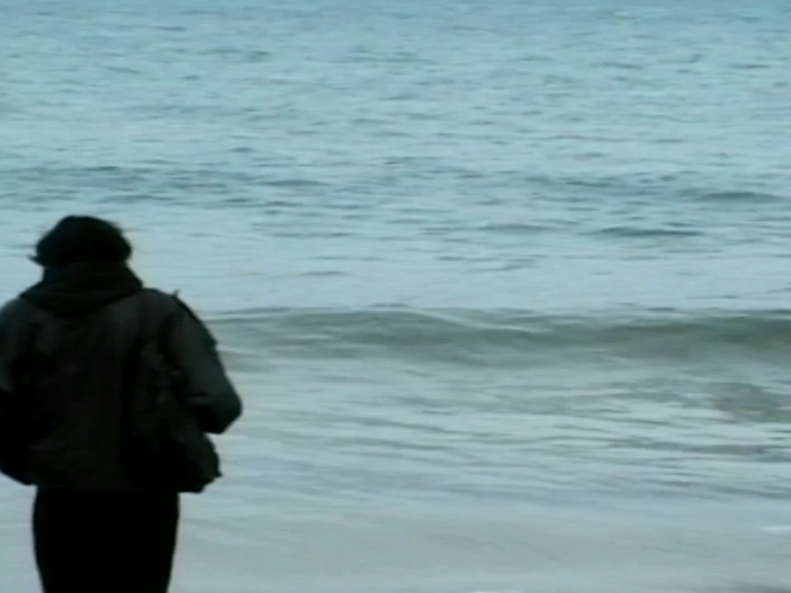
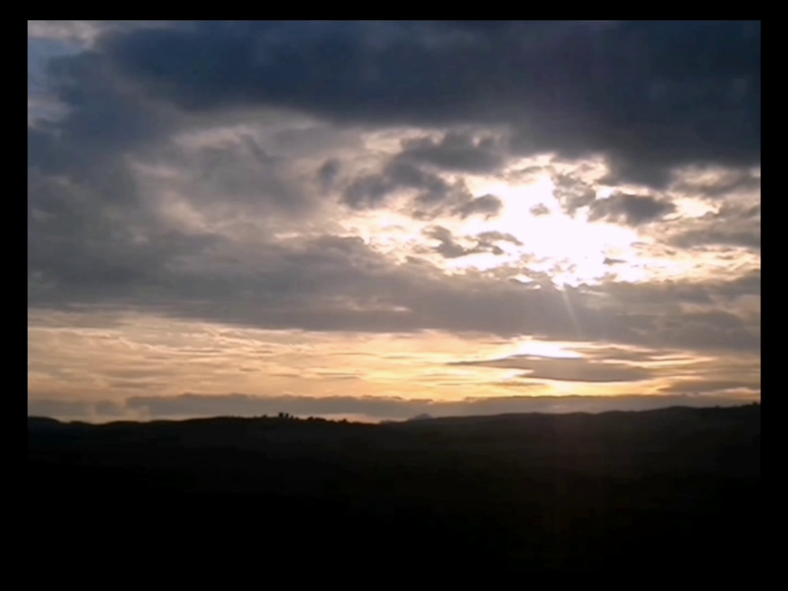

Reflection (2026)
dur. 29min~

"I weep for the World, I weep for You"
A journey where all is revealed, a messy, authentic, raw experience where vulnerability is a force treasured by the masses and the universe alike. This work aims to consider the true essence of cinema rebuilding our perception of what is really the World and to discover its relation to the Self. It released with AMEN DVD: REFLECTION in March 24th 2026.
Resolution (2025)
dur. 6min~

A short film that expresses a certain point of view surrounding death. It first released as a part of the first edition of AMEN DVD in January 24th 2025, but later merged with another short film ("Saraba") and got re-released as "Resolution + Saraba" in December 6th 2025.